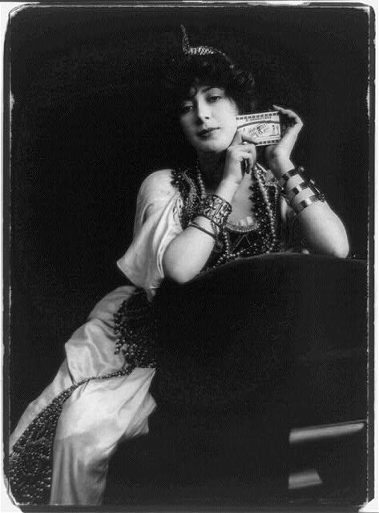

In the competitive and rapidly changing world of mass-media communications, media professionals—overcome by deadlines, bottom-line imperatives, and corporate interests—can easily lose sight of the ethical implications of their work. However, as entertainment law specialist Sherri Burr points out, “Because network television is an audiovisual medium that is piped free into ninety-nine percent of American homes, it is one of the most important vehicles for depicting cultural images to our population.”Sherri Burr, “Television and Societal Effects: An Analysis of Media Images of African-Americans in Historical Context,” Journal of Gender, Race and Justice 4 (2001): 159. Considering the profound influence mass media like television have on cultural perceptions and attitudes, it is important for the creators of media content to grapple with ethical issues.
The U.S. population is becoming increasingly diverse. According to U.S. Census statistics from 2010, 27.6 percent of the population identifies its race as non-white.U.S. Census Bureau, “2010 Census Data,” http://2010.census.gov/2010census/data/. Yet in network television broadcasts, major publications, and other forms of mass media and entertainment, minorities are often either absent or presented as heavily stereotyped, two-dimensional characters. Rarely are minorities depicted as complex characters with the full range of human emotions, motivations, and behaviors. Meanwhile, the stereotyping of women, gays and lesbians, and individuals with disabilities in mass media has also been a source of concern.
The word stereotype originated in the printing industry as a method of making identical copies, and the practice of stereotyping people is much the same: a system of identically replicating an image of an “other.” As related in Chapter 8 "Movies" about D. W. Griffith’s The Birth of a Nation, a film that relied on racial stereotypes to portray Southern whites as victims in the American Civil War, stereotypes—especially those disseminated through mass media—become a form of social control, shaping collective perceptions and individual identities. In American mass media, the white man is still shown as the standard: the central figure of television narratives and the dominant perspective on everything from trends, to current events, to politics. White maleness becomes an invisible category because it gives the impression of being the norm.Joanna Hearne, “Hollywood Whiteness and Stereotypes,” Film Reference, http://www.filmreference.com/encyclopedia/Independent-Film-Road-Movies/Race-and-Ethnicity-HOLLYWOOD-WHITENESS-AND-STEREOTYPES.html.
In the fall of 1999, when the major television networks released their schedules for the upcoming programming season, a startling trend became clear. Of the 26 newly released television programs, none depicted an African American in a leading role, and even the secondary roles on these shows included almost no racial minorities. In response to this ommission, the National Association for the Advancement of Colored People (NAACP) and the National Council of La Raza (NCLR), an advocacy group for Hispanic Americans, organized protests and boycotts. Pressured—and embarrassed—into action, the executives from the major networks made a fast dash to add racial minorities to their prime-time shows, not only among actors, but also among producers, writers, and directors. Four of the networks—ABC, CBS, NBC, and Fox—added a vice president of diversity position to help oversee the networks’ progress toward creating more diverse programming.Leonard M. Baynes, “White Out: The Absence and Stereotyping of People of Color by the Broadcast Networks in Prime Time Entertainment Programming,” Arizona Law Review 45 (2003): 293.
Despite these changes and greater public attention regarding diversity issues, minority underrepresentation is still an issue in all areas of mass media. In fact, the trend in recent years has been regressive. In a recent study, the NAACP reported that the number of minority actors on network television has actually decreased, from 333 during the 2002–2003 season to 307 four years later.WWAY, “NAACP Not Pleased With the Diversity on Television,” January 12, 2009, http://www.wwaytv3.com/naacp_not_pleased_diversity_television/01/2009. Racial minorities are often absent, peripheral, or take on stereotyped roles in film, television, print media, advertising, and even in video games. Additionally, according to a 2002 study by the University of California, Los Angeles, the problem is not only a visible one, but also one that extends behind the scenes. The study found that minorities are even more underrepresented in creative and decision-making positions than they are on screen.Media Awareness Network, “Ethnic and Visible Minorities in Entertainment Media,” 2010, http://www.media-awareness.ca/english/issues/stereotyping/ethnics_and_minorities/minorities_entertainment.cfm. This lack of representation among producers, writers, and directors often directly affects the way minorities are portrayed in film and television, leading to racial stereotypes.
Though advocacy groups like the NCLR and the NAACP have often been at the forefront of protests against minority stereotypes in the media, experts are quick to point out that the issue is one everyone should be concerned about. As media ethicist Leonard M. Baynes argues, “Since we live in a relatively segregated country…broadcast television and its images and representations are very important because television can be the common meeting ground for all Americans.”Leonard M. Baynes, “White Out: The Absence and Stereotyping of People of Color by the Broadcast Networks in Prime Time Entertainment Programming,” Arizona Law Review 45 (2003): 293. There are clear correlations between mass media portrayals of minority groups and public perceptions. In 1999, after hundreds of complaints by African Americans that they were unable to get taxis to pick them up, the city of New York launched a crackdown, threatening to revoke the licenses of cab drivers who refused to stop for African American customers. When interviewed by reporters, many cab drivers blamed their actions on fears they would be robbed or asked to drive to dangerous neighborhoods.Sherri Burr, “Television and Societal Effects: An Analysis of Media Images of African-Americans in Historical Context,” Journal of Gender, Race and Justice 4 (2001): 159.
Racial stereotypes are not only an issue in entertainment media; they also find their way into news reporting, which is a form of storytelling. Journalists, editors, and reporters are still predominately white. According to a 2000 survey, only 11.6 percent of newsroom staff in the United States were racial and ethnic minorities.Media Awareness Network, “Ethnic and Visible Minorities in the News,” 2010, http://www.media-awareness.ca/english/issues/stereotyping/ethnics_and_minorities/minorities_news.cfm. The situation has not improved dramatically during the past decade. According to a 2008 newsroom census released by the American Society of Newspaper Editors, the percentage of minority journalists working at daily newspapers was a scant 13.52 percent.National Association of Hispanic Journalists, “NAHJ Disturbed by Figures That Mask Decline in Newsroom Diversity,” news release, 2010, http://www.nahj.org/nahjnews/articles/2008/April/ASNE.shtml. Because of this underrepresentation behind the scenes, the news media is led by those whose perspective is already privileged, who create the narratives about those without privilege. In the news media, racial minorities are often cast in the role of villains or troublemakers, which in turn shapes public perceptions about these groups. Media critics Robert Entman and Andrew Rojecki point out that images of African Americans on welfare, African American violence, and urban crime in African American communities “facilitate the construction of menacing imagery.”Clifford G. Christians, “Communication Ethics,” in Encyclopedia of Science, Technology, and Ethics, ed. Carl Mitchum (Detroit: Macmillan Reference USA, 2005), 1:366. Similarly, a study by the National Association of Hispanic Journalists found that only 1 percent of the evening news stories aired by the three major U.S. television networks cover Latinos or Latino issues, and that when Latinos are featured, they are portrayed negatively 80 percent of the time.Media Awareness Network, “Ethnic and Visible Minorities in the News.” Still others have criticized journalists and reporters for a tendency toward reductive presentations of complex issues involving minorities, such as the religious and racial tensions fueled by the September 11 attacks. By reducing these conflicts to “opposing framesExplaining an issue as a two-sided struggle for the sake of fast and easy audience comprehension.”—that is, by oversimplifying them as two-sided struggles so that they can be quickly and easily understood—the news media helped create a greater sense of separation between Islamic Americans and the dominant culture after September 11, 2001.Ginny Whitehouse, “Why Diversity Is an Ethical Issue,” The Handbook of Mass Media Ethics, ed. Lee Wilkins and Clifford G. Christians (New York: Routledge, 2009), 101.
Since the late 1970s, the major professional journalism organizations in the United States—Associated Press Managing Editors (APME), Newspaper Association of America (NAA), American Society of Newspaper Editors (ASNE), Society for Professional Journalists (SPJ), Radio and Television News Directors Association (RTNDA), and others—have included greater ethnic diversity as a primary goal or ethic. However, progress has been slow. ASNE has set 2025 as a target date to have minority representation in newsrooms match U.S. demographics.Ginny Whitehouse, “Why Diversity Is an Ethical Issue,” The Handbook of Mass Media Ethics, ed. Lee Wilkins and Clifford G. Christians (New York: Routledge, 2009), 102.
Because the programming about, by, and for ethnic minorities in the mainstream media is disproportionately low, many turn to niche publications and channels such as BET, Univision, Telemundo, Essence, Jet, and others for sources of information and entertainment. In fact, 45 percent of ethnic-minority adults prefer these niche media sources to mainstream television, radio programs, and newspapers.Ginny Whitehouse, “Why Diversity Is an Ethical Issue,” The Handbook of Mass Media Ethics, ed. Lee Wilkins and Clifford G. Christians (New York: Routledge, 2009), 103. These sources cover stories about racial minorities that are generally ignored by the mainstream press and offer ethnic-minority perspectives on more widely covered issues in the news.Pew Project for Excellence in Journalism, “Ethnic,” in The State of the News Media 2010, http://www.stateofthemedia.org/2010/ethnic_summary_essay.php. Entertainment channels like BET (a 24-hour cable television station that offers music videos, dramas featuring predominately black casts, and other original programming created by African Americans) provide the diverse programming that mainstream television networks often drop.Rachel Zellars, “Black Entertainment Television (BET),” in Encyclopedia of African-American Culture and History, 2nd ed., ed. Colin A. Palmer (Detroit: Macmillan Reference USA, 2006.) 1:259. Print sources like Vista, a bilingual magazine targeting U.S. Hispanics, and Vivid, the most widely circulated African American periodical, appeal to ethnic minority groups because they are controlled and created by individuals within these groups. Though some criticize ethnic niche media, claiming that they erode common ground or, in some instances, perpetuate stereotypes, the popularity of these media has only grown in recent years and will likely continue in the absence of more diverse perspectives in mainstream media sources.Can Tran, “TV Network Reviews: Black Entertainment Television (BET),” Helium, http://www.helium.com/items/884989-tv-network-reviews-black-entertainment-television-bet; Joe Flint, “No Black-and-White Answer for the Lack of Diversity on Television,” Company Town (blog), Los Angeles Times, June 11, 2010, http://latimesblogs.latimes.com/entertainmentnewsbuzz/2010/06/diversity-television.html.
In the ABC sitcom The Donna Reed Show (1958–1966), actress Donna Reed plays a stay-at-home mother who fills her days with housework, cooking for her husband and children, decorating, and participating in community organizations, all while wearing pearls, heels, and stylish dresses. Such a traditional portrayal of femininity no doubt sounds dated to modern audiences, but stereotyped gender roles continue to thrive in the mass media. Women are still often represented as subordinate to their male counterparts—emotional, noncompetitive, domestic, and sweet natured. In contrast to these types, other women are represented as unattractively masculine, crazy, or cruel. In television dramas and sitcoms, women continue to fill traditional roles such as mothers, nurses, secretaries, and housewives. By contrast, men in film and television are less likely to be shown in the home, and male characters are generally characterized by dominance, aggression, action, physical strength, and ambition.Daniel Chandler, “Television and Gender Roles” http://www.aber.ac.uk/media/Modules/TF33120/gendertv.html#E. In the mainstream news media, men are predominately featured as authorities on specialized issues like business, politics, and economics, while women are more likely to report on stories about natural disasters or domestic violence—coverage that does not require expertise.Media Awareness Network, “Media Coverage of Women and Women’s Issues,” http://www.media-awareness.ca/english/issues/stereotyping/women_and_girls/women_working.cfm. In sports programming, men are the authoritative figures in the broadcast booth while women are “sideline reporters.“
Not only is the white male perspective still presented as the standard, authoritative one, but also the media itself often comes to embody the male gaze. Media commentator Nancy Hass notes that “shows that don’t focus on men have to feature the sort of women that guys might watch.”Media Awareness Network, “The Economics of Gender Stereotyping,” http://www.media-awareness.ca/english/issues/stereotyping/women_and_girls/women_economics.cfm. Feminist critics have long been concerned by the way women in film, television, and print media are defined by their sexuality. Few female role models exist in the media who are valued primarily for qualities like intelligence or leadership. Inundated by images that conform to unrealistic beauty standards, women come to believe at an early age that their value depends on their physical attractiveness. According to one Newsweek article, eating disorders in girls are now routinely being diagnosed at younger ages, sometimes as early as 8 or 9. The models who appear in magazines and print advertising are unrealistically skinny (23 percent thinner than the average woman), and their photographs are further enhanced to hide flaws and blemishes. Meanwhile, the majority of women appearing on television are under the age of 30, and many older actresses, facing the pressure to embody the youthful ideal, undergo surgical enhancements to appear younger.Jennifer L. Derenne and Eugene V. Beresin, “Body Image, Media, and Eating Disorders,” Academic Psychiatry 30 (2006), http://ap.psychiatryonline.org/cgi/content/full/30/3/257. One recent example is television news host Greta Van Susteren, a respected legal analyst who moved from CNN to Fox in 2002. At the debut of her show, On the Record, Van Susteren, sitting behind a table that allowed viewers to see her short skirt, had undergone not only a hair and wardrobe makeover, but also surgical enhancement to make her appear younger and more attractive.Media Awareness Network, “Media Coverage of Women and Women’s Issues,” http://www.media-awareness.ca/english/issues/stereotyping/women_and_girls/women_working.cfm. However, these enhancements are not restricted to the “over 30” crowd. Indeed, younger stars, such as Ashley Tisdale (High School Musical), singer Ashlee Simpson, and reality star Heidi Montag, have all availed themselves of plastic surgery.
In addition to the prevalence of gender stereotypes, the ratio of men to women in the mass media, in and behind the scenes, is also disproportionate. Surprisingly, though women slightly outnumber men in the general population, over two-thirds of television sitcoms feature men in the starring role.Media Awareness Network, “The Economics of Gender Stereotyping,” http://www.media-awareness.ca/english/issues/stereotyping/women_and_girls/women_economics.cfm. Among writers, producers, directors, and editors, the number of women lags far behind. In Hollywood, for instance, only 17 percent of behind-the-scenes creative talent is represented by women. Communications researcher Martha Lauzen argues that “when women have more powerful roles in the making of a movie or television show, we know that we also get more powerful female characters on-screen, women who are more real and more multi-dimensional.”Media Awareness Network, “Women Working in the Media,” http://www.media-awareness.ca/english/issues/stereotyping/women_and_girls/women_working.cfm.
Creators of all forms of media know that sex—named, innuendoed, or overtly displayed—is a surefire way to grab an audience’s attention. “Sex sells” is an advertising cliché; the list of products that advertisers have linked to erotic imagery or innuendo, from cosmetics and cars to vacation packages and beer, is nearly inexhaustible. Most often, sexualized advertising content is served up in the form of the female body, in part or in whole, featured in provocative or suggestive poses beside a product that may have nothing to do with sexuality. However, by linking these two things, advertisers are marketing desire itself.
Figure 14.2
Sex Sells: Commodifying Desire, Past and Present
Sex is used to sell not just consumer goods; it sells media, too. Music videos on MTV and VH1, which promote artists and their music, capture audience attention with highly suggestive dance moves, often performed by scantily clad women. Recent music videos by Jennifer Lopez, Rihanna, Beyoncé, and Lady Gaga are just a few examples. Movie trailers may flash brief images of nudity or passionate kissing to suggest more to come in the movie. Video games feature female characters like Lara Croft of Tomb Raider, whose tightly fitted clothes reveal all the curves of her Barbie-doll figure. And partially nude models grace the cover of men’s and women’s magazines like Maxim, Cosmopolitan, and Vogue where cover lines promise titillating tips, gossip, and advice on bedroom behavior.Tom Reichert and Jacqueline Lambiase, “Peddling Desire: Sex and the Marketing of Media and Consumer Goods,” Sex in Consumer Culture: The Erotic Content of Media and Marketing, ed. Tom Reichert and Jacqueline Lambiase (New York: Routledge, 2005), 3.
In the 1920s and 1930s, filmmakers attracted audiences to the silver screen with the promise of what was then considered scandalous content. Prior to the 1934 Hays Code, which placed restrictions on “indecent” content in movies, films featured erotic dances, male and female nudity, references to homosexuality, and sexual violence (for more information on the Hays Code, see Chapter 8 "Movies" and Chapter 15 "Media and Government"). D. W. Griffith’s Intolerance (1916) includes scenes with topless actresses, as does Ben Hur (1925). In Warner Bros.’ Female (1933), the leading lady, the head of a major car company, spends her evenings in sexual exploits with her male employees, a story line that would never have passed the Hays Code a year later.Gary Morris, “Public Enemy: Warner Brothers in the Pre-Code Era,” Bright Lights Film Journal, September 1996, http://www.brightlightsfilm.com/17/04b_warner.php. Trouble in Paradise, a 1932 romantic comedy, was withdrawn from circulation after the institution of the Hays Code because of its frank discussion of sexuality. Similarly, Dr. Jekyll and Mr. Hyde (1931), which featured a prostitute as one of the main characters, was also banned under the code.Daniel P. Hauesser, “Indecent and Deviant: Pre-Hays Code Films You Should See,” indieWIRE, 2007, http://www.spout.com/groups/Top_5/Re_5_Pre_Hays_Code_Films/190/19210/1/ShowPost.aspx.
In the 1960s, when the sexual revolution led to increasingly permissive attitudes toward sexuality in American culture, the Hays Code was replaced with the MPAA rating system, with ratings such as G, PG, and R. The rating system, designed to warn parents about potentially objectionable material in films, allowed filmmakers to include sexually explicit content without fear of public protest. Since the replacement of the Hays Code, sexual content has been featured in movies with much greater frequency.
The problem, according to many media critics, is not that sex now appears more often, but that it is almost always portrayed unrealistically in American mass media.Mary Lou Galician, Sex, Love & Romance in the Mass Media (New York: Routledge, 2004), 5; Media Awareness Network, “Sex and Relationships in the Media,” Media Awareness Network, http://www.media-awareness.ca/english/issues/stereotyping/women_and_girls/women_sex.cfm. This can be harmful, they say, because the mass media are important socialization agentsA way people learn about the norms, expectations, and values of their society.; that is, ways that people learn about the norms, expectations, and values of their society.Mary Lou Galician, Sex, Love & Romance in the Mass Media (New York: Routledge, 2004), 82. Sex, as many films, television shows, music videos, and song lyrics present it, is frequent and casual. Rarely do these media point out the potential emotional and physical consequences of sexual behavior. According to one study, portrayals of sex that include possible risks like sexually transmitted diseases or pregnancy only occur in 15 percent of the sexually explicit material on television.Parents Television Council, “Facts and TV Statistics,” http://www.parentstv.org/ptc/facts/mediafacts.asp. Additionally, actors and models depicted in sexual relationships in the media are thinner, younger, and more attractive than the average adult. This creates unrealistic expectations about the necessary ingredients for a satisfying sexual relationship.
Social psychologists are particularly concerned with the negative effects these unrealistic portrayals have on women, as women’s bodies are the primary means of introducing sexual content into media targeted at both men and women. Media activist Jean Kilbourne points out that “women’s bodies are often dismembered into legs, breasts or thighs, reinforcing the message that women are objects rather than whole human beings.”Media Awareness Network, “Sex and Relationships in the Media,” Media Awareness Network, http://www.media-awareness.ca/english/issues/stereotyping/women_and_girls/women_sex.cfm. Adbusters, a magazine that critiques mass media, particularly advertising, points out the sexual objectification of women’s bodies in a number of its spoof advertisements, such as the one in Figure 14.3, bringing home the message that advertising often sends unrealistic and harmful messages about women’s bodies and sexuality. Additionally, many researchers note that in women’s magazines, advertising, and music videos, women are often implicitly—and sometimes explicitly—given the message that a primary concern should be attracting and sexually satisfying men.Media Awareness Network, “Sex and Relationships in the Media,” Media Awareness Network, http://www.media-awareness.ca/english/issues/stereotyping/women_and_girls/women_sex.cfm. Furthermore, the recent increase in entertainment featuring sexual violence may, according to some studies, negatively affect the way young men behave toward women.Barrie Gunter, Media Sex: What Are the Issues? (Mahwah, NJ: Lawrence Erlbaum Associates, 2002), 8.
Figure 14.3
Sexual objectification: Women’s bodies are often headless or dismembered into legs, breasts, or thighs in media portrayals.Adbusters, “Spoof Ads,” https://www.adbusters.org/gallery/spoofads.
Young women and men are especially vulnerable to the effects of media portrayals of sexuality. Psychologists have long noted that teens and children get much of their information and many of their opinions about sex through television, film, and online media. In fact, two-thirds of adolescents turn to the media first when they want to learn about sexuality.Media Awareness Network, “Sex and Relationships in the Media,” Media Awareness Network, http://www.media-awareness.ca/english/issues/stereotyping/women_and_girls/women_sex.cfm. The media may help shape teenage and adolescent attitudes toward sex, but they can also lead young people to engage in sexual activity before they are prepared to handle the consequences. According to one study, kids with high exposure to sex on television were almost twice as likely to initiate sexual activity compared to kids without exposure.Rebecca L. Collins and others, “Watching Sex on Television Predicts Adolescent Initiation of Sexual Behavior,” Pediatrics 114, no. 3 (2004), http://pediatrics.aappublications.org/cgi/content/full/114/3/e280.
Cultural critics have noted that sexually explicit themes in mass media are generally more widely accepted in European nations than they are in the United States. However, the increased concern and debates over censorship of sexual content in the United States may in fact be linked to the way sex is portrayed in American media rather than to the presence of the sexual content in and of itself. Unrealistic portrayals that fail to take into account the actual complexity of sexual relationships seem to be a primary concern. As Jean Kilbourne has argued, sex in the American media “has far more to do with trivializing sex than with promoting it. We are offered a pseudo-sexuality that makes it far more difficult to discover our own unique and authentic sexuality.”Media Awareness Network, “Sex and Relationships in the Media,” Media Awareness Network, http://www.media-awareness.ca/english/issues/stereotyping/women_and_girls/women_sex.cfm. However, despite these criticisms, it is likely that unrealistic portrayals of sexual content will continue to be the norm in mass media unless the general public stops consuming these images.
Choose a television show or movie you are familiar with and consider the characters in terms of racial and gender diversity. Then answer the following short-answer questions. Each response should be one to two paragraphs.